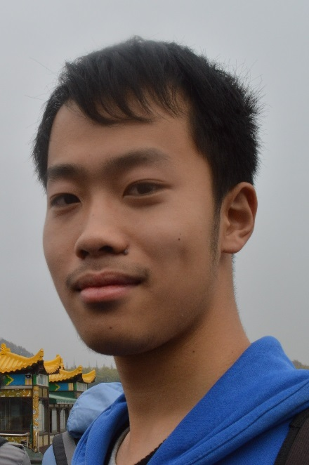

Home CV Research Academics Gallery Contact
Tian at a glance
|  |
Born and grew up in Yangzhou, the intersection of Yangtze River and the Grand Canal, I developed an interest in water and sediment. I attended Nanjing University for related studies, and in June 2017, I was awarded B.Sc. in Geographical Science as an Outstanding Graduate, with a minor in Oceanographic Science. It is Professor Shu GAO who invited me into the fascinating research of coastal oceanography. Currently, I am working with Prof. Shu GAO, Prof. Ya Ping WANG and Dr. Qian YU on coastal sediment dynamics. My particular interests include sediment transport and coastal geomorphology. Meanwhile, I am also curious about river delta dynamics and estuarine processes. In the future, I would like to promote a deeper understanding of coastal sediment transport processes by combining observational (in-situ & remote sensing) and modeling approaches, to decipher coastal morphological changes, and to convey the proceedings to both academia and the public. Other than science, I enjoy taking railway journeys, hiking, speaking Chinese dialects (Lower Yangtze, Wu, and Minnan), singing world folk songs, and being a gourmet. I also spoke for my class as the Class Monitor, from September 2014 to June 2017. |
Contact
E-mail: jdzhaotian@msn.com
Cell: (+86) 158 5053 7512
Mail address:
B426, Kunshan Building, NJU Xianlin Campus
163 Xianlin Avenue
Nanjing 210023
China